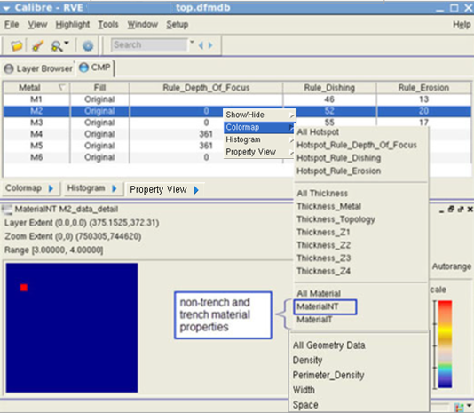
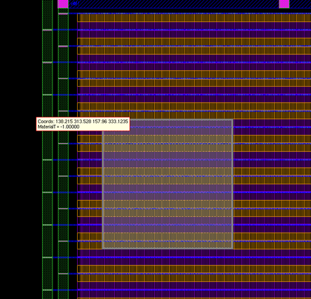

You can display non‑trench and trench material
properties (MaterialNT and MaterialT) from a DFM database for hotspot
analysis.
Prerequisites
Your process
recipe file from Calibre CMP Model Builder has the initialize command syntax
that enables MaterialNT and MaterialT properties to be saved to
a DFM database. For example, the first initialize command statement
in the recipe file contains the following syntax:
initialize material=nitride materialNT(T)dfmdb position=0A
You have followed the
steps described in “CMP Analysis”, and you have a DFM database
containing the analysis results.
Calibre DESIGNrev
or another layout viewer that is supported by Calibre RVE is open with
your layout loaded. See “Communication with the Design Tool” in the Calibre Interactive User’s Manual for
information on communication between Calibre RVE and the layout
viewer.
Calibre RVE
for DFM is running and the CMP analysis results are displayed in
the CMP tab.
Procedure
- Set your
results viewing preferences and highlighting options in the Calibre
RVE for DFM user interface as described in “Reviewing Analysis Results”.
- Review
the data displayed in the CMP tab.
- Right-click
on the M2 row (or a metal layer of interest)
and choose Colormap > MaterialNT.
This creates a colormap of the non‑trench material
with MaterialNT property.
Figure 1. MaterialNT
Property Colormap
- Right-click
on the M2 row (or a metal layer of interest) and choose Colormap
> MaterialT.
This creates a colormap that of the trench material
with MaterialT property.
- Right‑click
on a tile of interest in the colormap and choose Highlight
Window to display the location of the trench material
with MaterialT property in the layout viewer.
Figure 2. MaterialT
Property Location in Layout Viewer
- From the
menu bar, choose Window > Close All to close
the colormap windows.
- Right-click
on the M2 row (or a metal layer of interest)
and choose Colormap > All Material.
- This creates
colormaps for both the non‑trench material with MaterialNT property
and the trench material with MaterialT property.